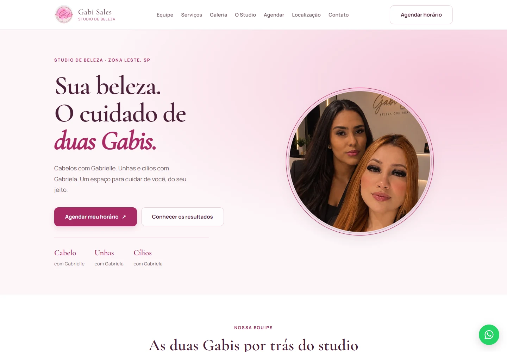
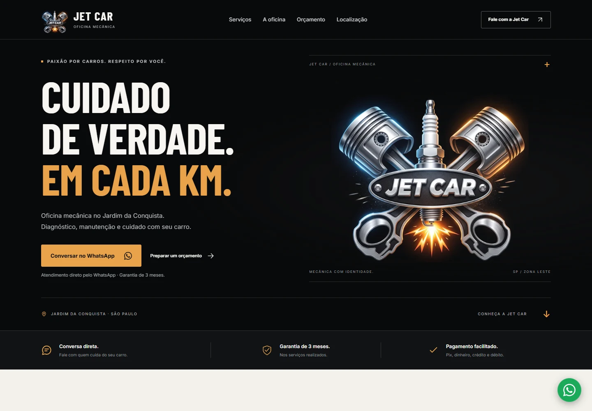

Studio Gabi Sales
Cabelo, unhas e cílios no mesmo estúdio. O site apresenta as profissionais, a galeria e um botão para agendar um horário.
Visitar projetoGustavo Sales · Desenvolvimento web
Crio sites para mostrar o que você faz e ajudo a planejar o primeiro atendimento de quem chega até você.
Gustavo Sales
Sites e automação de atendimento


01 / Projetos selecionados
Cada negócio tem uma história.
Meu trabalho é ajudar a colocá-la na web.
Cabelo, unhas e cílios no mesmo estúdio. O site apresenta as profissionais, a galeria e um botão para agendar um horário.
Visitar projetoQuem precisa de manutenção encontra os serviços e a localização da oficina. A página oferece dois caminhos: preparar um orçamento ou conversar no WhatsApp.
Visitar projetoAUTOMAÇÃO DE ATENDIMENTO
Veja um exemplo de como organizar dúvidas e encaminhar pedidos em uma conversa guiada.
Experimentar demonstração02 / Como posso ajudar
Você traz a necessidade.
Eu ajudo a transformar em uma solução.
Apresente seu negócio, seus serviços e as informações que o cliente precisa para encontrar você.
Apresentação · serviços · contatoUma página focada em um produto, serviço ou campanha, com um caminho claro para pedir orçamento.
Oferta · informações · orçamentoPodemos planejar quais perguntas um assistente virtual responderia usando seus horários, serviços e regras, e quando chamaria alguém da equipe.
Experimentar a conversa →03 / Atendimento com inteligência artificial
Um assistente com inteligência artificial pode entender uma pergunta escrita com as palavras do cliente. Ele pode responder usando as informações do seu negócio e reunir os detalhes que sua equipe precisa para atender.
Experimente como cliente de uma oficina fictícia. Escolha um serviço e veja quais informações chegariam à equipe antes de ela preparar o orçamento.
04 / Quem está por trás
Gosto de transformar ideias em coisas que as pessoas conseguem usar.
Estudo Sistemas de Informação e desenvolvo projetos para a web. Minha experiência com suporte em um provedor de internet também me aproxima das dúvidas reais de quem usa tecnologia todos os dias.
Por aqui, reúno trabalhos, estudos e demonstrações. Meu foco é entender a necessidade antes de escolher a solução.
05 / Do começo à entrega
Objetivo, público e o que você precisa resolver.
Escopo, prazo e investimento definidos antes de começar.
Você acompanha a proposta e participa dos ajustes.
Publicação e orientações conforme o que combinamos.
Sua ideia começa aqui
Conte o que você precisa.
Vamos organizar o primeiro passo juntos.
TEM UMA IDEIA EM MENTE?
Me conte sobre seu negócio
e o que você quer construir.
Escolha o que precisa e revise seu resumo.